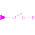

PartialSISOSamplerBasic block used for sampling of Boolean signals |

|
Connectors (2)
| u |
Type: BooleanInput Description: Connector of continuous-time, Real input signal |
|
|---|---|---|
| y |
Type: BooleanOutput Description: Connector of clocked, Real output signal |
Extended by (1)
|
Modelica.Clocked.BooleanSignals.Sampler Sample the continuous-time, Boolean input signal and provide it as clocked output signal (clock is inferred) |